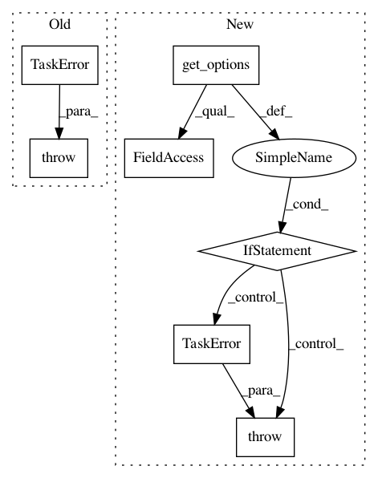

ef3c4f54d0a80e78f958bf5905313a41df6f196d,src/python/pants/backend/jvm/tasks/jvm_compile/zinc/zinc_compile.py,BaseZincCompile,_verify_zinc_classpath,#Any#Any#,322
Before Change
raise TaskError("Classpath entries provided to zinc should be in working directory. " +
path + " is not.")
if path != os.path.normpath(path):
raise TaskError("Classpath entries provided to zinc should be normalised (i.e. without ".." and "."). " +
path + " is not.")
def log_zinc_file(self, analysis_file):
self.context.log.debug("Calling zinc on: {} ({})"
.format(analysis_file,
After Change
if not os.path.isabs(path):
raise TaskError("Classpath entries provided to zinc should be absolute. "
"{} is not.".format(path))
if is_outside(path, self.get_options().pants_workdir) and is_outside(path, self.dist.home):
raise TaskError("Classpath entries provided to zinc should be in working directory or "
"part of the JDK. {} is not.".format(path))
if path != os.path.normpath(path):
raise TaskError("Classpath entries provided to zinc should be normalized "
"(i.e. without ".." and "."). {} is not.".format(path))
def log_zinc_file(self, analysis_file):
self.context.log.debug("Calling zinc on: {} ({})"
.format(analysis_file,
In pattern: SUPERPATTERN
Frequency: 3
Non-data size: 7
Instances
Project Name: pantsbuild/pants
Commit Name: ef3c4f54d0a80e78f958bf5905313a41df6f196d
Time: 2016-05-12
Author: benjyw@gmail.com
File Name: src/python/pants/backend/jvm/tasks/jvm_compile/zinc/zinc_compile.py
Class Name: BaseZincCompile
Method Name: _verify_zinc_classpath
Project Name: pantsbuild/pants
Commit Name: e77a650432097e3eeb867dfe4fec5235450414bf
Time: 2016-03-06
Author: cheister@gmail.com
File Name: src/python/pants/backend/graph_info/tasks/list_owners.py
Class Name: ListOwners
Method Name: console_output
Project Name: pantsbuild/pants
Commit Name: 2cee9ffb825757cbe8cacfa23f305b3ad8d527ed
Time: 2014-11-04
Author: itykaul@gmail.com
File Name: src/python/pants/backend/jvm/tasks/dependencies.py
Class Name: Dependencies
Method Name: __init__